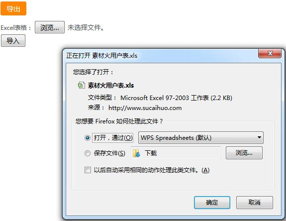

原生PHP实现的网页导出和导入excel文件实例，包括上传也是用的原生。还可在exportExcel方法里设置字体等表格样式。

导出和导入表单代码：
1 <p style="margin:10px 0"><a href="export.php" class="btn">导出</a></p>
2 <form action="import.php" method="post" enctype="multipart/form-data">
3 <div class="control-group">
4 <label>Excel表格：</label>
5 <input type="file" name="file"/>
6 </div>
7 <div class="control-group">
8 <input type="submit" value="导入" />
9 </div>
10 </form>
excel导出：
1 $query = mysql_query("select * from user limit 50");
2 $i =0;
3 $list = array();
4 while($row=mysql_fetch_array($query)){
5 $list[$i]['id'] = $row['id'];
6 $list[$i]['username'] = $row['username'];
7 $list[$i]['password'] = $row['password'];
8 $i++;
9 }
10
11 $title = array('ID', '邮箱', '密码'); //设置要导出excel的表头
12 exportExcel($list, '素材火用户表', $title);
exportExcel方法代码：
1 function exportExcel($data, $savefile = null, $title = null, $sheetname = 'sheet1') {
2 require_once 'PHPExcel.class.php';
3 //若没有指定文件名则为当前时间戳
4 if (is_null($savefile)) {
5 $savefile = time();
6 }
7 //若指字了excel表头，则把表单追加到正文内容前面去
8 if (is_array($title)) {
9 array_unshift($data, $title);
10 }
11 $objPHPExcel = new PHPExcel();
12 //Excel内容
13 $head_num = count($data);
14
15 foreach ($data as $k => $v) {
16 $obj = $objPHPExcel->setActiveSheetIndex(0);
17 $row = $k + 1; //行
18 $nn = 0;
19
20 foreach ($v as $vv) {
21 $col = chr(65 + $nn); //列
22 $obj->setCellValue($col . $row, $vv); //列,行,值
23 $nn++;
24 }
25 }
26 //设置列头标题
27 for ($i = 0; $i < $head_num - 1; $i++) {
28 $alpha = chr(65 + $i);
29 $objPHPExcel->getActiveSheet()->getColumnDimension($alpha)->setAutoSize(true); //单元宽度自适应
30 $objPHPExcel->getActiveSheet()->getStyle($alpha . '1')->getFont()->setName("Candara"); //设置字体
31 $objPHPExcel->getActiveSheet()->getStyle($alpha . '1')->getFont()->setSize(12); //设置大小
32 $objPHPExcel->getActiveSheet()->getStyle($alpha . '1')->getFont()->getColor()->setARGB(PHPExcel_Style_Color::COLOR_BLACK); //设置颜色
33 $objPHPExcel->getActiveSheet()->getStyle($alpha . '1')->getAlignment()->setHorizontal(PHPExcel_Style_Alignment::HORIZONTAL_CENTER); //水平居中
34 $objPHPExcel->getActiveSheet()->getStyle($alpha . '1')->getAlignment()->setVertical(PHPExcel_Style_Alignment::VERTICAL_CENTER); //垂直居中
35 $objPHPExcel->getActiveSheet()->getStyle($alpha . '1')->getFont()->setBold(true); //加粗
36 }
37
38 $objPHPExcel->getActiveSheet()->setTitle($sheetname); //题目
39 $objPHPExcel->setActiveSheetIndex(0); //设置当前的sheet
40 header('Content-Type: application/vnd.ms-excel');
41 header('Content-Disposition: attachment;filename="' . $savefile . '.xls"');//文件名称
42 header('Cache-Control: max-age=0');
43 $objWriter = PHPExcel_IOFactory::createWriter($objPHPExcel, 'Excel5'); //Excel5
44 $objWriter->save('php://output');
45 }
excel导入：
1 $tmp = $_FILES['file']['tmp_name'];
2 if (empty($tmp)) {
3 echo '请选择要导入的Excel文件！';
4 exit;
5 }
6
7 $save_path = "uploads/";
8 $filename = $save_path . date('Ymdhis') . ".xls"; //上传后的文件保存路径和名称
9 if (copy($tmp, $filename)) {
10 require_once 'PHPExcel.class.php';
11 require_once 'PHPExcel/Reader/Excel5.php';
12
13
14 $PHPReader = new PHPExcel_Reader_Excel5(); //PHPExcel_Reader_Excel2007 PHPExcel_Reader_Excel5
15 //载入文件
16 $PHPExcel = $PHPReader->load($filename);
17
18 //获取表中的第一个工作表，如果要获取第二个，把0改为1，依次类推
19 $currentSheet = $PHPExcel->getSheet(0);
20 //获取总列数
21 $allColumn = $currentSheet->getHighestColumn();
22 //获取总行数
23 $allRow = $currentSheet->getHighestRow();
24 //循环获取表中的数据，$currentRow表示当前行，从哪行开始读取数据，索引值从0开始
25 for ($currentRow = 1; $currentRow <= $allRow; $currentRow++) {
26 //从哪列开始，A表示第一列
27 for ($currentColumn = 'A'; $currentColumn <= $allColumn; $currentColumn++) {
28 //数据坐标
29 $address = $currentColumn . $currentRow;
30 //读取到的数据，保存到数组$arr中
31 $data[$currentRow][$currentColumn] = $currentSheet->getCell($address)->getValue();
32 }
33 }
34
35 $add_time = date('Y-m-d H:i:s', time());
36 foreach ($data as $k => $v) {
37 if ($k > 1) {
38 $sql = "insert into user (username,password) values ('" . $v['B'] . "', '" . $v['C'] . "')";
39
40 mysql_query($sql);
41 }
42 }
43
44 $sql = "SELECT * FROM user";
45 $result = mysql_query($sql);
46 $tip = '用户导入成功' . '，现在' . mysql_num_rows($result) . '条数据了！';
47 echo "<script>alert('" . $tip . "');history.go(-1);</script>";
48 exit;
49 }
本文转自：https://www.sucaihuo.com/php/141.html 转载请注明出处！